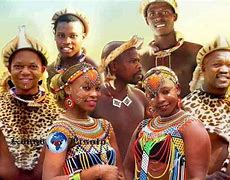

Les peuples du Nord
 Le Nord du Cameroun présente tous les caractères des régions que l'on a souvent appelé, en Afrique, des « mosaïques de populations ». Les groupements sont tellement morcelés qu'il est impossible, sur une carte sommaire, d'indiquer toutes les peuplades différentes et, lorsqu'on veut simplifier les divisions habituelles, on risque de réunir sous une même dénomination des populations qui n'ont, entre elles, que des rapports très vagues *. On peut distinguer, grossièrement, du. Nord au Sud, quatre sujets d'étude différents : Dans la plaine voisine du Tchad vivent des Arabes Choa dont l'habitat s'étend jusqu'aux montagnes du Mandara, et desKotokoqui semblent, par certaines de leurs coutumes, se rattacher à de très anciennes civilisations du centre africain 2. Un peu plus au Sud, un certain nombre de populations, comme les Mousgoum, les Bana, les Toubouri, les Moundang, les Laka, ont leur principale aire d'extension en A. E. F. Bien qu'elles présentent des caractères très différents les unes des autres, nous les avons indiquées par le même grisé, parce qu'il semble préférable de les étudier à part. Dans les parties les plus riches de la plaine, on retrouve des Foulbé, établis dans la région depuis une centaine d'années, à la suite de l'invasion conduite par le chef Osman dan Fodio. Ils se sont convertis à l'Islamisme et se sont imposés partout comme les chefs politiques du pays. Ils ont partagé celui-ci en « Lamidats », sortes de petits royaumes dont l'administration française a maintenu en général les limites. (Deux de ces Lamidats ont encore des dimensions et une importance politique considérables ; ce sont ceux de Goulfeï et de Reï-Bouba). Enfin, dans les montagnes de l'Ouest et dans la plaine de la Bénoué vivent d'innombrables petites peuplades qui se distinguent de leurs voisins Foulbé parleur résistance à l'influence islamique ; aussi les appelle* t-on les « Habé », c'est-à-dire « les payens ». — Ce sont, sans doute, les groupes les plus curieux à étudier du point de vue anthropologique «t du point de vue ethnographique. Établis à la limite du monde soudanais et du monde Bantou, ils ont subi l'influence de l*un et de l'autre ; ils paraissent présenter de plus des caractères physiques particuliers et d'ailleurs très variables d'une peuplade à l'autre. Leurs coutumes sont également très originales et encore incomplètement étudiées1. Beaucoup de peuplades montagnardes des Mandara et des Alantika semblent se rapprocher par leurs traditions religieuses de celles du Cameroun britannique et de la Nigeria. Elles vivent dans des conditions matérielles souvent très dures et il a fallu faire de fréquents efforts pour améliorer leur hygiène et les préserver de la famine. L'origine de ces petits agrégats humains reste encore mystérieuse. Il paraît impossible, actuellement, de les rattacher directement à tel ou tel grand groupe ethnique. Des études plus poussées permettront d'éclaircir cet intéressant problème scientifique. Espérons qu'elles serviront aussi, par les connaissances nouvelles des traditions locales qu'elles apporteront, à faciliter la tâche de l'administration dans le gouvernement des indigènes.Les Paléo-soudanais
Les rites chez les paléo-soudanais sont très diversifiés et varient selon les régions et les époques. Les paléo-soudanais sont des peuples qui ont vécu dans la région du Soudan actuel, il y a plusieurs milliers d’années. Les rites pratiqués par ces peuples étaient souvent liés à la religion et à la spiritualité. Les paléo-soudanais croyaient en l’existence de plusieurs dieux et déesses, et ils pratiquaient des rituels pour honorer ces divinités. Les rites les plus courants chez les paléo-soudanais étaient les sacrifices d’animaux, les offrandes de nourriture et les cérémonies de danse. Les sacrifices d’animaux étaient souvent pratiqués pour apaiser les dieux et déesses, et pour obtenir leur protection et leur bénédiction. Les offrandes de nourriture étaient également courantes, et elles étaient souvent accompagnées de chants et de prières. Les cérémonies de danse étaient un autre élément important des rites paléo-soudanais, et elles étaient souvent utilisées pour célébrer les événements importants de la vie, comme les mariages et les naissances. Il est important de noter que les informations sur les rites paléo-soudanais sont souvent fragmentaires et incomplètes, car ces peuples n’ont pas laissé de documents écrits. Les informations que nous avons aujourd’hui sur ces peuples proviennent principalement de fouilles archéologiques et de témoignages oraux. Si vous avez besoin de plus d’informations sur les rites paléo-soudanais, je vous recommande de consulter des ouvrages spécialisés sur le sujet.
Les Néo-soudanais
Les rites chez les paléo-soudanais sont très diversifiés et varient selon les régions et les époques. Les paléo-soudanais sont des peuples qui ont vécu dans la région du Soudan actuel, il y a plusieurs milliers d’années. Les rites pratiqués par ces peuples étaient souvent liés à la religion et à la spiritualité. Les paléo-soudanais croyaient en l’existence de plusieurs dieux et déesses, et ils pratiquaient des rituels pour honorer ces divinités. Les rites les plus courants chez les paléo-soudanais étaient les sacrifices d’animaux, les offrandes de nourriture et les cérémonies de danse. Les sacrifices d’animaux étaient souvent pratiqués pour apaiser les dieux et déesses, et pour obtenir leur protection et leur bénédiction. Les offrandes de nourriture étaient également courantes, et elles étaient souvent accompagnées de chants et de prières. Les cérémonies de danse étaient un autre élément important des rites paléo-soudanais, et elles étaient souvent utilisées pour célébrer les événements importants de la vie, comme les mariages et les naissances. Il est important de noter que les informations sur les rites paléo-soudanais sont souvent fragmentaires et incomplètes, car ces peuples n’ont pas laissé de documents écrits. Les informations que nous avons aujourd’hui sur ces peuples proviennent principalement de fouilles archéologiques et de témoignages oraux. Si vous avez besoin de plus d’informations sur les rites paléo-soudanais, je vous recommande de consulter des ouvrages spécialisés sur le sujet.